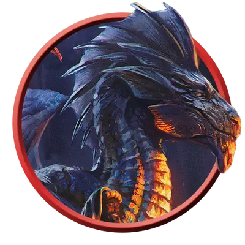

Взрослый серебряный дракон
Adult Silver Dragon
Огромный Дракон (Металлический), Принципиальный Добрый

Класс Защиты 19 Инициатива +10 (20)
Хиты 216 (16к12 + 112)
Скорость 40 футов, Полёта 80 футов
| мод | спас | ||
|---|---|---|---|
| СИЛ | 27 | +8 | +8 |
| ЛОВ | 10 | +0 | +5 |
| ТЕЛ | 25 | +7 | +7 |
| мод | спас | ||
|---|---|---|---|
| ИНТ | 16 | +3 | +3 |
| МДР | 13 | +1 | +6 |
| ХАР | 22 | +6 | +6 |
Иммунитеты Холод
Чувства Тёмное зрение 120 футов, пассивное Восприятие 21, Слепое зрение 60 футов
Языки Общий, Драконий
Опасность 16 (15 000 опыта или 18 000 опыта в Логове; БВ +5)
Особенности
Легендарное сопротивление (3/день, или 4/день в Логове). Если дракон проваливает спасбросок, он вместо этого может в нём преуспеть.
Действия
Мультиатака. Дракон совершает три атаки Раздиранием. Он может заменить одну из этих атак использованием (A) Парализующего дыхания or (B) Сотворения заклинаний (Ледяной кинжал).
Раздирание. Бросок рукопашной атаки: +13, досягаемость 10 фт. Попадание: 17 (2к8 + 8) Рубящего урона плюс 4 (1к8) урона Холодом.
Холодное дыхание (Перезарядка 5–6). Спасбросок Телосложения: Сл 20, каждое существо в 60-футовом Конусе. Провал: 54 (12к8) урона Холодом. Успех: Только половина урона.
Парализующее дыхание. Спасбросок Телосложения: Сл 20, каждое существо в 60-футовом Конусе. Первый провал: Цель Недееспособна до конца своего следующего хода, после чего повторяет спасбросок. Второй провал: Цель Парализована и повторяет спасбросок в конце каждого своего хода, оканчивая этот эффект при успехе. Через 1 минуту цель автоматически преуспевает в спасброске.
Сотворение заклинаний. Взрослый серебряный дракон сотворяет одно из следующих заклинаний, не нуждаясь в Материальных компонентах (заклинательная характеристика — Харизма, Сл спасброска заклинаний 19, +11 к попаданию атак заклинаний):
Неограниченно: Ледяной кинжал, Обнаружение магии, Преображение, Временных хитов, Концентрации, Временные хиты, Удержание монстра
1/день каждое: Град, версия 5-го уровня, Область истины
Легендарные действия
У этого существа есть 3 использования Легендарных действий (или 4 использования в его Логове); оно может немедленно после окончания хода другого существа потратить одно использование, чтобы совершить одно из следующих действий. Существо восполняет все потраченные использования в начале каждого своего хода.
Мороз. Дракон использует Сотворение заклинаний (Удержание монстра). Дракон не может совершить это действие повторно до начала своего следующего хода.
Ледяной шквал. Спасбросок Ловкости: Сл 19, каждое существо в Линии длиной 60 футов и шириной 10 футов. Провал: 14 (4к6) урона Холодом, и цель отталкивается от дракона по прямой на расстояние вплоть до 30 футов. Успех: Только половина урона. Провал или успех: Дракон не может совершить это действие повторно до начала своего следующего хода.
Наскок. Дракон перемещается на расстояние вплоть до половины своей Скорости и совершает одну атаку Раздиранием.
Бонус мастерства +5
Среда обитания Город, Горы
Сокровища Магические
Серебряные драконы
Драконы отваги и справедливости
Серебряные драконы неустанно трудятся на тем, чтобы сохранять мир и вдохновлять других на великие свершения. Они стараются служить примером порядочности, при этом не смыкая глаз следя за проявлениями зла.
Как правило, серебряные драконы обитают среди заснеженных горных пиков, хотя амбиции и общительность приводят некоторых из них к жизни в больших, многолюдных городах. Приняв облик Гуманоидов, они заводят дружбу с художниками, историками, рыцарями и скромными правителями — теми, кто учится у прошлого, чтобы построить лучшее будущее.
Серебряные драконы черпают вдохновение в легендарных героях и сами вынашивают грандиозные замыслы. Многие собирают сокровища, отражающие эти интересы: исторические хроники, древние произведения искусства и снаряжение прославленных героев.
Взрослые серебряные драконы любят проводить время среди самых разных народов. Вместо того, чтобы напрямую влиять на политику, они поддерживают отдельных индивидов — всех, кто ставит перед собой высокие цели или возрождает великие университеты, вдохновляющие спортивные состязания и фестивали, равно как и иные благие общественные начинания минувших эпох. Эти драконы часто окружают себя единомышленниками и зорко следят за скрытыми угрозами.
Логова серебряных драконов
Серебряные драконы устраивают логова среди живописных горных кряжей или на рукотворных облачных «островах».
Местность, в которой находится логово взрослого или древнего серебряного дракона, изменяется из-за его присутствия, что создаёт следующие эффекты:
• Нежные дуновения. Ветра подхватывают падающих существ в пределах 1 мили от логова. Такие существа снижаются со скоростью 60 футов в раунд и не получают урона от падения.
• Солнце и бури. Пока дракон находится в логове, он может творить заклинание Власть над погодой, не нуждаясь в Материальных компонентах (заклинательная характеристика — та же, что для его действия Сотворение заклинаний).
Если дракон умирает или перемещает своё логово в другое место, все эти эффекты мгновенно исчезают.